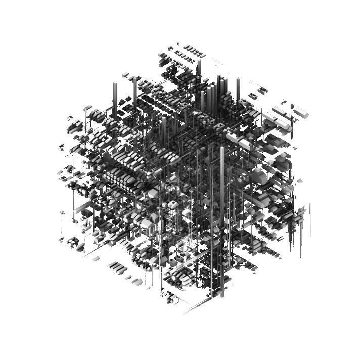

LE PROJET
Rave-Runner est une exploration d'espaces potentiels, de réalités possibles où l'architecture se mouveoit à la vitesse des circuits électroniques et des fibres optiques. Le projet fut réalisé dans le cadre d'un concours d'architecture paramétrique où l'utilisation de Grasshopper était exigée. Le résultat est un générateur d'espaces qui, à chaque boucle itérative, crée un nouvel espace à interpréter. Une de ces itérations fut ensuite imprimée en 3D et explorée plus en profondeur.

Modèle Grasshopper
Rendus - Antoine Blais
Impression 3D/Modélisation - Victor Demers
Présentation - Simon Gavioli
Photographie/Grasshopper - Louis-G Imreh
